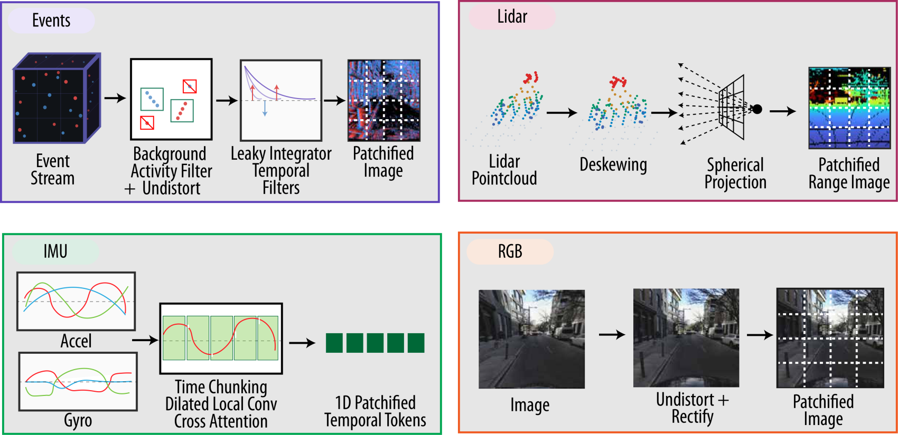
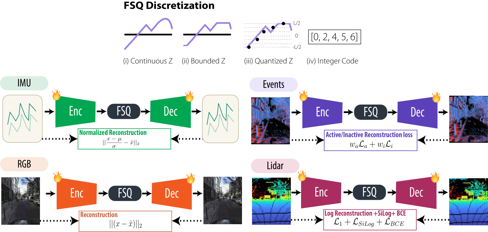
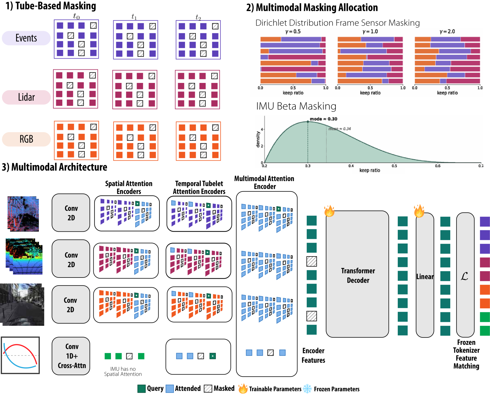
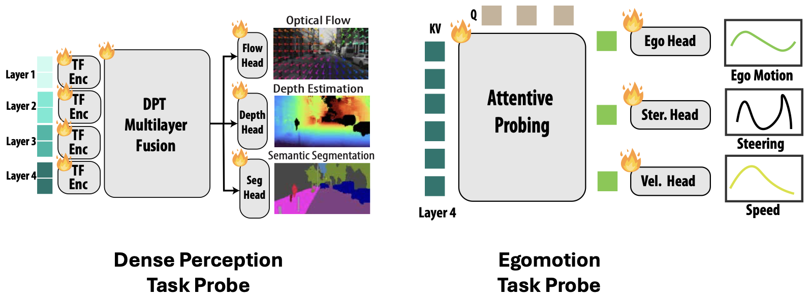

1 · Sensor representations
Every modality has to become a sequence of tokens, but each arrives in a different form. The event stream is high-frequency and noisy: we drop isolated events with a spatio-temporal filter, then run a bank of leaky integrators at several bandwidths to turn the asynchronous stream into a multi-channel image that captures motion across timescales. LiDAR is deskewed and projected into a forward 64×512 range image; RGB is undistorted and rectified into ViT patches; and the IMU accelerometer/gyroscope are convolved over a 1.6 s window and pooled with cross-attention. Each image-like modality is then split into patches.

2 · Tokenized targets
Reconstructing raw pixels breaks down across modalities, their loss scales and token counts differ wildly, so training collapses onto the easy ones. Instead, each modality gets its own autoencoder trained ahead of time with finite scalar quantization (FSQ), mapping every patch to a bounded discrete code. The MAE then predicts these frozen codes rather than pixels, putting all modalities on comparable footing. Per-modality tweaks we make are: LiDAR adds a validity mask for ray-drop holes, events use a weighted active/inactive loss, and the IMU is mean-removed and normalized.

3 · Late-fusion MAE
The fusion model masks the tokens in spatio-temporal tubes, each modality's keep-ratio drawn from a Dirichlet distribution so that, across training, the model sees everything from a single dominant sensor to a near-uniform mix, and even whole sensors dropped. The encoder is factorized into three attention stages: spatial within each frame, temporal along each patch's tube across the 8 timesteps, and finally multimodal across all surviving tokens, with a 4D rotary embedding over (time, u, v, sensor). A shared decoder with per-modality heads reconstructs the FSQ codes under an ℓ1 loss. At inference, per-modality tokens are cached within the window so only new measurements are re-encoded, keeping the late-fusion encoder real-time, about 60% faster than early fusion.

4 · Downstream probes
The pretrained encoder is then frozen, and lightweight probes read off task predictions. A Dense Prediction Transformer fuses features from four encoder layers to predict optical flow, depth, and segmentation; a separate attentive probe cross-attends to the final encoder layer to regress ego-motion, relative pose, steering, speed, and angular/linear velocity. Only these heads are trained per task; the representation itself is never fine-tuned, so the numbers reflect the quality of the learned features directly.
